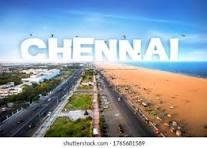
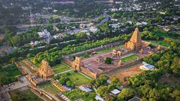
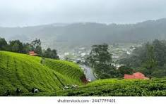
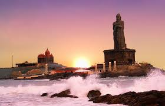
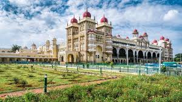

CHENNAI

Chennai, the capital of Tamil Nadu, blends ancient traditions with modern life. Known as the "Gateway to South India", it's rich in culture, temples, and commerce.
THANJAVUR

Thanjavur, in the Kaveri Delta, is known as the Rice Bowl of Tamil Nadu. It’s rich in agriculture and ancient art, especially the famous Brihadeeswarar Temple.
OOTY

Ooty, officially Udhagamandalam, is a renowned hill station in the Nilgiri district of Tamil Nadu, India. Nestled in the Nilgiri Hills, it's known for its scenic beauty, cool climate, and colonial charm.
KANYAKUMARI

Kanyakumari, the southernmost tip of mainland India, is a popular tourist and pilgrimage destination known for its unique geographical features, religious significance, and stunning natural beauty. It's where the Arabian Sea, Bay of Bengal, and Indian Ocean converge, offering breathtaking views of the sun rising and setting over the sea.
MYSORE

Mysore (also known as Mysuru), a city in Karnataka, India, is famed as the "Cultural Capital" and "City of Palaces". It was once the capital of the Kingdom of Mysore, ruled by the Wodeyar dynasty, and is known for its rich cultural heritage and historical landmarks.
KERALA

Kerala, also known as "God's Own Country," is a state in the southwestern part of India renowned for its natural beauty, rich culture, and diverse landscapes. It's a popular tourist destination, offering beaches, backwaters, hill stations, and Ayurvedic tourism.